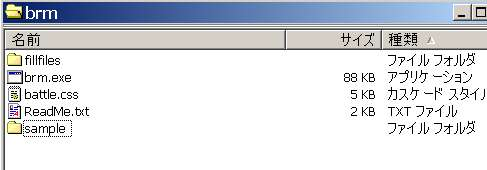
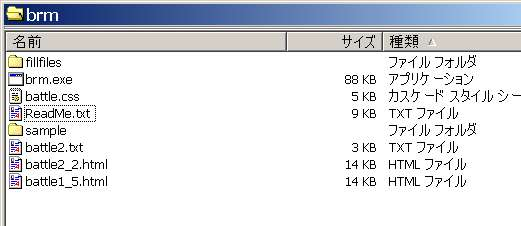

| 右弐のホームページへ戻る ドラクエ5日記へ戻る |
戦闘例
パーティー：主人公、ビアンカ、ボロンゴ 敵 ：ホイミスライム、くびながイタチ2匹、ベビーニュート 主人公HP40、ビアンカHP18、ボロンゴHP44 1ターン目： ボロンゴ：打撃→くびながイタチ、12ダメージ ビアンカ：メラ→ベビーニュート、12ダメージ ホイミスライム：ホイミ→くびながイタチB、Max くびながイタチB：打撃→ビアンカ、5ダメージ ベビーニュート：ギラ→主人公12、ビアンカ14死亡、ボロンゴ16ダメージ くびながイタチA：甘い息→主人公眠り 主人公→目覚め 2ターン目： ボロンゴ：打撃→くびながイタチB、14ダメージ撃破 ホイミスライム：打撃→主人公、3ダメージ ベビーニュート：打撃→主人公、7ダメージ 主人公：打撃→ホイミスライム20、くびながイタチA15撃破、ベビーニュート13 3ターン目： ボロンゴ：会心→ホイミスライム34、撃破 ベビーニュート：打撃→ボロンゴ10 主人公：世界樹の葉→ビアンカ、復活 4ターン目： ビアンカ：ルカナン→ベビーニュート、守-19 ボロンゴ：打撃→ベビーニュート14、撃破 以下では、この戦闘をした場合の入力例を示します。 是非、ご自分で入力して、操作を練習してみてください。 なお、DOS windowに入力するコマンドは、すべて行頭に「:」を打ってあります。 この通りに入力すると、sampleフォルダ内のものと同じファイルが作成されるはずです。入力例
 まず、フォルダ内の、brm.exeをダブルクリックします。 何をやりたいかを聞かれます。 とりあえず :1 と入力してください。 本ソフトでは、 １．まず「battle card」と呼ぶ、戦譜のもとになるテキストファイルを生成し、 ２．次に「html形式」の戦譜ファイルを出力する という、2段階で戦譜を作成します。 （これは、「個々戦闘のデータ」と「htmlファイルという表現」を分離させるための仕様です。） 今は、上記の１を行うので、最初に1を入力したわけです。 次に、 battle ID番号 味方キャラクターの数、 敵キャラクターの数、 を聞かれます。 ここではbattle ID 2としてみます。 仲間は3、敵は4です。 :2 :3 :4 次に、味方キャラの名前を聞かれます。 最初に、前回と同じ編成かどうかを聞かれます。 同じなら「s」、違うなら、適当な文字を入れればOKです。 :a（「s」以外なら何でも良い。何文字でもよい。） 味方キャラの名前を入れます （ちなみに、DOS Windowで日本語入力をするためには、筆者の環境では「Alt＋半角」とします。 これでできないときは、ご自分の環境をご調査願います。） :主人公 :ビアンカ :ボロンゴ 次に、敵キャラの名前を入れます グループの場合は、「g」を選ぶことで、楽にアルファベットを振ることができます。 最初は、ホイミスライムなので、そのまま入れてみましょう。 :ホイミスライム さて、次は、くびながイタチ2匹です。 ここで、グループ入力機能を使います。 :g すると、名前、数、最初のアルファベット の順で入れろといってきますので、入れます。 このとき、必ず半角スペースで区切り、数字、アルファベットは半角で入れるようにしてください。 :くびながイタチ 2 A 最後に、ベビーニュートを入力します :ベビーニュート これで、名前の入力は終りです。 続いて、各キャラのクラス（＊キャラの色を決めるもの）を入力します。 ここで、先ほど入力した名前が出てきます。 :sh :bi :bo これで、味方の設定は終了。 次に、敵キャラクターです。 クラス名、または「s」を入力します :e1 :e2 :s（これは「e2」と入力したのと同じになる。） :e3 三番目の、「くびながイタチB」は、直前の「くびながイタチA」と同グループですので、同じクラスを設定したほうが良さそうです。 この場合は「s」と打つことで入力できます。 ちなみに、これらのクラスは、スタイルシート内に定義されています。 他のキャラのクラス名について知りたい方は、スタイルシート内をご覧下さい。 なお、スタイルシート内を書き換えれば、ご自分でクラス設定が可能です。 DQ5以外の他のDQシリーズで使いたい場合は、使用キャラのクラスを作成しておくと便利です。 ここで、最後に、戦闘開始時に死んでいるキャラクターがいるかを聞いてきます。 いる場合は「y」を入力してください。 今は誰も死んでいないので、他の文字を適当に入れます :zz（「y」以外なら何でもよい） これで初期設定は終りです。 ここまで入力すると、一気に画面が流れ、簡易戦譜が表示されます。 表の各表記の意味は、よく考えればわかると思いますので、説明は割愛します。 まず、戦闘開始時のステータスを入力してみましょう。 （なお、これ以降、入力を間違えたら、適宜「bl」「bt」コマンドを用いて、行を戻り修正できます。） :s 面倒くさいので、仲間キャラのHPだけを入れてみます。 :HP40 :HP18 :HP44 :f 「f」と入力すると、その後のキャラはすべてスキップされて、入力受付画面に戻ります。 画面上で、戦譜の行が1行増えたことをご確認ください。 この調子で、一行ずつ、戦譜を入力していくことになります。 まずは「ボロンゴ：打撃→くびながイタチ、12ダメージ」を入力してみましょう。 行動を入力するときは、「a」です。 :a ここで、キャラID、行動か影響か、内容、の順に、半角スペースで区切って入力してやります。 まず、ボロンゴ、行動した、打撃、なので :3 a 打撃 次に、くびながイタチB、影響、12ダメージなので、 :6 i 12 これで、この行の入力は終りです。 :n これで、戦譜にまた一行が書き加わりました。 入力時には、簡易戦譜のIDを参照しながら入力すると便利だと思います。 また、表が横長になるので、DOS Windewは大きめにしておくことをオススメします。 途中で入力ミスをしたときは、「e」を入力すると、その行の情報はすべて消去されます。 再度書き直してください。 1行削除は「bl」、1ターン削除は「bt」を使って行います。 さて、どんどん入力していきましょう。 次は、「ビアンカ：メラ→ベビーニュート、12ダメージ」ですね。 :a :2 a メラ :7 i 12 :n さて、ここまで入力してきて、気付いたと思いますが、 DOSで、ひらがな、半角の入力切替をするのが、かなり面倒です。 これを改善するため、いくつかの「よく使う語」は、半角ローマ字で入力しても、 勝手に日本語に変換されるよう、辞書を用意しました。 次は、「ホイミスライム：ホイミ→くびながイタチB、Max」です。 ホイミは「hoimi」と入力することで、勝手にホイミと変換してくれます。 :a :4 a hoimi :6 i Max :n 画面では「ホイ」までしか確認できませんが、確かに変換されています。 これらの辞書は「fillfiles」フォルダ内にありますので、ご自分で書き換えて、より便利に使うことができます。 規則がわかればご自由に変更して活用ください。 さて、実は上記で4回に分けて書いていた入力文は、実は一行でも入力可能です。 例として、次の「くびながイタチB：打撃→ビアンカ、5ダメージ」を、一行で入力してみましょう。 :a 6 a dageki 2 i 5 n これで1行が書き加わります。 慣れてくると、こちらのほうが手早く入力できるはずです。 「打撃」も辞書登録されている語なので、「dageki」で勝手に変換されます。 では、続けて入力してみましょう。 「ベビーニュート：ギラ→主人公12、ビアンカ14死亡、ボロンゴ16ダメージ」 :a 7 a gira 1 i 12 2 i 14 3 i 16 n 影響を受けるのが複数キャラいるため、ちょっと複雑ですが、これも1行で入力可能です。 さて、ここでビアンカが死んでしまいました。 死んでしまったキャラは白地で表すとすると、次のコマンドで「死んだ」ことを入力してやります。 :da これは、生死を設定するコマンドです。 死んだのはID2のビアンカなので、ここでは :d 2 f と入力してやります。 ここで、表の最下段の「av」が「dd」に変化して、以降の行は白地で出力されることになります。 さて、次の行は「くびながイタチA：甘い息→主人公眠り」 :a 5 a 甘い息 1 i +nemuri n 「主人公→目覚め」 :a 1 a 覚醒 1 i -nemuri n これでやっと第1ターンが終了です。 ターンの終了コマンドを入力します。 :nt さて、改めてターン開始時のステータスを入力してやりましょう。 実はここでも、半角スペースで区切って、一行で入力することが可能です。 今度は、敵モンスターのステータスも入力してやりましょう。 :s HP28 v HP28 DM0 DM0 DM0 DM12 「v」を入力すると、そのキャラの欄は空白になります。 さて、どんどん入力しましょう。 「ボロンゴ：打撃→くびながイタチB、14ダメージ撃破」 :a 3 a da 6 i 14 n ここで撃破したので、ID6を死亡にセットします :da d 6 f これも一行で入力可能です。（コマンドの文法を憶えてないと無理ですが。） どんどんいきましょう。 「ホイミスライム：打撃→主人公、3ダメージ」 :a 4 a da 1 i 3 n 「ベビーニュート：打撃→主人公、7ダメージ」 :a 1 i 7 7 a da n 実は、「行動」と「影響」は、書く順番はどちらでも良いので、こういう入力もできます。 「主人公：打撃→ホイミスライム20、くびながイタチA15撃破、ベビーニュート13」 :a 1 a da 4 i 20 5 i 15 7 i 13 n :da d 5 f ここでターン終了です :nt 次、3ターン目に行きましょう。 ここまで来ると、生きているキャラも減っているので、入力も楽になってきます。笑。 :s HP18 v HP28 DM20 v v DM25 「ボロンゴ：会心→ホイミスライム34、撃破」 :a 3 a 会心 4 i 34 n :da d 4 f 「会心」は辞書登録されていないので、入力が手間です。今後の拡張に期待してください。 または、ご自分でお書き加えください。 （経験的に、2回以上入力する語句なのなら、あらかじめ辞書登録したほうが効率が良いです。） 「ベビーニュート：打撃→ボロンゴ10」 :a 3 i 10 7 a da n 「主人公：世界樹の葉→ビアンカ、復活」 :a 1 a sekaijunoha 2 i fukka n :da a 2 f ここは説明が必要でしょう。 まず、「世界樹の葉」は辞書登録されていますが、「sekai」とか入力すると、 「世界樹の雫」と変換されてしまう可能性があるので、きちんと同定できる範囲まで入力します。 （ちなみに、検索語句は、辞書ファイルの上から順にヒットします。 このため、辞書ファイル内で、間違って「bagi」を「bagikurosu」よりも下に書いてしまうと、 「bagi」と書いても「バギクロス」となってしまいます。 ご自分で辞書を拡張される場合は、この点にご注意ください。） また、このターンで、ビアンカは生き返っているため、生死設定の「da」コマンドを使って生き返らせます。 このあとの行から、白地ではなくなります。 :nt では、最終4ターン目です。 ステータスから入力してやりましょう。 :s HP18 HP18 HP18 v v v DM25 「ビアンカ：ルカナン→ベビーニュート、守-19」 :a 2 a rukana 7 i DF-19 n ルカナンは、辞書でルカニと識別できるよう、最低でも「rukana」までを入力してやる必要があります。 「ボロンゴ：打撃→ベビーニュート14、撃破」 :a 3 a d 7 i 14 n 実は、打撃は「d」だけでもヒットします。 ここで戦闘は終了です。 :end これで、この「battle ID 2」の戦闘については入力終了です。 続けて次の戦闘の入力に入る場合は「n」、終わる場合は「e」を入力します。 （もともと、このソフトは、プレイの全戦闘の戦譜を作成する目的で作られたので、 「n」のような連続作成機能があるのですが、単発での戦譜作成ではほとんど「e」でしょう。） :e brmが閉じます。 ここで、フォルダを見てみましょう battle2.txt というファイルが生成されているはずです。 試しにテキストエディタで開いてみてください。 今入力したデータが、「battle card形式」（←私が名づけただけ）で書き込まれています。 （慣れてくると、このtxtファイルを直接編集できるようになります。 brm上で「bl」「bt」コマンドを使って修正するよりも、効率のよい編集が可能になります。 しかし、記述に矛盾を生じると、html化ができなくなるので、ご注意ください。） 今度は、このファイルをもとに、htmlファイルを生成します。 再びbrmを立ち上げてください。 brmをダブルクリック 今度は最初に「2」を選びます。 :2 するとここで、「戦闘IDの何番から何番までを、一つのhtmlファイルに戦譜化するのか」を聞いてきます。 Aが開始ID、Bが終了IDです。 今は、battle ID 2 の戦闘のみをhtml化すればよいので、 :2 :2 と、開始も終了も2でOKです。 すると、これでほんとに良いのかと聞いてきますので、 :y と入れます。 処理画面が流れて、htmlファイルが生成されます。 （この際、battle2.txtファイルが、正しい形式でないと、処理が止まります。 ログを見て、どこがおかしいかを判断してください。） 他のファイルも作るか、と聞いてきます。 ここで試しに作ってみましょう。 :n 今度は、IDが1から5のファイルを生成してみましょう。 Aに1、Bに5を入れます :1 :5 :y これは「battle ID 1から5の、戦闘の戦譜を、ひとつのhtmlファイルに生成せよ」という命令です。 よって、brmは、 battle1.txt battle2.txt ・・・ battle5.txt の順でファイルを探しますが、 1,3,4,5は存在しないので、実質先ほどと同じ内容のファイルが生成されます。 （出力ログにも、1，3，4，5は存在しないので次を探す、と出ていることがわかると思います。） ちなみに、現時点では、battle ID は1～999までが用意されています。 つまり、 battle1.txt から battle999.txt までの999ファイルを用意すれば、それを同一ファイルにhtml化することが可能です。 （実はこれも、プレイの全戦闘を戦譜化する目的で作った機能です。あまり活用することはないでしょう。） さて、だいぶ横道にそれましたが、 html作成が終わったので、brmを終了しましょう。 :e フォルダを見てみると、新たに、 battle2_2.html battle1_5.html が生成されていることがわかると思います。  これをブラウザで閲覧してみてください。 ・・・どうでしょうか。 慣れてくると、かなりのスピードで戦譜を入力できるようになります。 まだ色々と説明していないコマンドもありますが、それらはご自分で試してみてください。 ご要望があれば、また説明を追加したいと思います。 2006.09.17 右弐
| このページのトップへ戻る 右弐のホームページへ戻る ドラクエ5日記へ戻る |